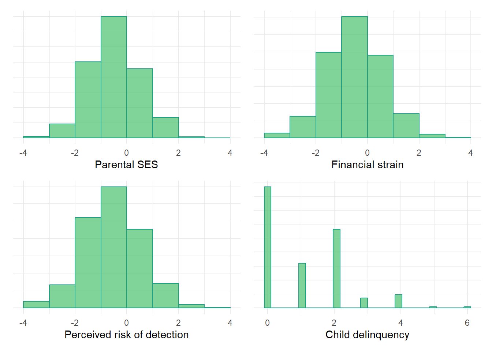

You’ve heard the phrase ‘correlation does not imply causation.’ But does causation imply correlation?
Author
Jon Brauer
Published
April 10, 2023
Pop art portrait of someone very confused, by DALL-E
Thinking up the ladder of causation
I have taught a version of my undergraduate introductory course on theories of crime and deviance (CJUS-P 200 at Indiana University) nearly every semester, across three different universities, for at least 15 years. In each of those courses, my second lecture has been devoted to teaching principles of causality.
I start that segment by asking all the students what it means to say that “something causes something else.” Most answers start with correlational description of causality (e.g., “X causes Y” means that “when X changes, Y tends to change”), or what Pearl & Mackenzie refer to as a “rung one” observation on the ladder of causation. In contrast, it is much rarer for students to intuit with minimal prompting a counterfactual or “rung three” description of causality (e.g., “X caused Y” means that, “if X had not changed, then Y would not have changed”).
This is a bit surprising. Sure, counterfactuals are weird and can be difficult to comprehend. Yet, we also seem to engage in counterfactual thinking naturally, as it appears central to imagination and rational agency. Moreover, the belief that randomization in controlled experiments offers a valid mechanism for making causal inferences relies upon counterfactual reasoning about potential outcomes; these counterfactual justifications underlying classical statistics were proposed by Neyman and Fisher a century ago! Meanwhile, principled counterfactual frameworks using potential outcomes to make causal inferences with observational data have been around since the 1970s and represent the dominant approach today.
In any case, after discussing the three basic criteria for establishing causal claims found in most sociology & criminology textbooks (correlation; nonspuriousness; temporal order), I briefly introduce my students to some more advanced ideas, such as simple versus complex causality, causal chains, causal mechanisms and mediation, effect heterogeneity and moderation, and, of course, counterfactual causality. In doing so, I often warn students that, while they might know that correlation does not necessarily imply causation, they may be surprised to learn that causation may exist even in the absence of observed correlation.
Causation without correlation
To say they are surprised by this is an understatement - many seem confused or altogether lost by that claim. After all, didn’t I just tell them that a basic criteria for establishing that X causes Y is one must observe that X is correlated with Y? Anticipating this confusion, I provide an example involving multiple mediation.
In fact, there are a number of reasons why two variables, X & Y, can be causally related despite the lack of an observed bivariate or conditional (partial) correlation between them. However, many of these reasons involve a failure to detect a correlation where one is expected to exist due to an existing causal relationship (notice the counterfactual reasoning again?). Examples include poor measurement and insufficient statistical power of a test to detect an effect, or improper modeling of nonlinear (e.g., parabolic) functional relationships, or sample selection bias. Interestingly, it is possible to fail to observe a correlation between two variables even when in situations where there is nearly perfect functional causality (see advanced example at end here).
While it is certainly important to understand how and why we might sometimes fail to statistically detect a correlation between X & Y where one might be causally expected, I am more interested in situations where one might not expect to detect a statistical correlation between X & Y even with precise measurement, sufficient power, careful sampling, and so on, and despite a reasonable belief in the existence of causal processes or mechanisms connecting X & Y. Examples might include counteracting direct and indirect effects or multiple countervailing mediators.
The statistical literature on mediation was particularly formative for my thinking on the topic. For example, consider the following excerpt from Andrew Hayes’ (2009) article, Beyond Baron & Kenny: Statistical Mediation Analysis in the New Millennium, in which he first expresses the common sentiment that X & Y must be correlated if they are causally connected through a mediator and then debunks the view as a myth:
Can Effects that Don’t Exist be ‘Mediated’?
If a mediator is a variable, M, that is causally between X and Y and that accounts at least in part for the association between X and Y, then by definition X and Y must be associated in order for M to be a mediator of that effect. According to this logic, if there is no evidence that X affects Y, then how can X’s effect on Y be mediated and so what is the point of estimating indirect and direct effects? But it is possible for M to be causally between X and Y even if X and Y aren’t associated. In this case, some prefer to avoid the term mediator when describing M and instead refer simply to X’s indirect effect on Y through M…
The distinction between mediation and indirect effect is not always made by users of the Baron and Kenny method, who may prematurely end the hunt for evidence of indirect effects if there is no evidence that X and Y are associated. If the size of c constrained the size of a and b and therefore their product, this logic would make sense. Unfortunately, no such constraints exist, and it is easy to show that the claim that X can’t affect Y indirectly in the absence of a detectable total effect is false.
Despite this being a well-established fact in the mediation/indirect effect literature, I was surprised to find very few accessible examples online to which I could point students for a more detailed illustration of the type of situation I was describing to them. So, I did what any nerd who recently learned R would do - I simulated some data to help my students better visualize an example. Then, I thought that others also might be uninformed or confused about the issue, so here we are.
AI to the rescue?
Before transforming my simulated example into a blog entry, I also sought wisdom from the artificial intelligence oracle ChatGPT by asking: “Is it possible to have causation without correlation?”
If interested, click to expand below for my full conversation with ChatGPT on the topic.
Conversation with ChatGPT
Include conversation, using magma & other html shading to highlight speakers
To its credit, ChatGPT recognized the possibility of causation without correlation. However, it primarily provided examples where causation exists and correlation would be expected to exist but, for reasons such as event rarity, shoddy measurement, or insufficiently powered tests, researchers are unable to detect an actually existing (i.e., nonzero) correlation. Again, what I wanted was an example where causality exists, yet where we would not expect to detect a correlation (e.g., we might expect r=0).
Causation does require statistical dependence
One final point of clarification before getting to an example. The basic criteria are not really wrong. Causation involves statistical dependence between X and (mechanisms of) Y, and statistical dependence may exist despite a lack of observed linear correlation. I think it may be easier for some people to understand how this might happen for methodological reasons (e.g., imprecise measures; insufficient data; mispecified model) than it is to understand how this might happen for theoretical reasons. Counterfactual reasoning can help; so can causal models or directed acyclic graphs (DAGs).
Without the proper causal model guiding our statistical modeling decisions and interpretations of data, it is easy to fail to observe statistical dependence where it exists (and vice versa) and then to incorrectly infer a lack of causality from the absence of correlation. To avoid this trap, what we need is to understand theoretically how and why X is related to Y - e.g., by creating a causal diagram that accurately depicts the causal relationship(s) between these variables. Once we identify the correct causal model generating the data, then we can model the data in a way that permits us to observe statistical dependence and identify the causal effect(s) of X on Y. In short, we really need to understand theory - aka, logical statements of the causal relations between concepts - to properly model and interpret our data.
Example from criminology
Let’s use an example from criminology to illustrate. Specifically, we will draw inspiration from Bradley Wright and colleagues’ (1999) paper in Criminology entitled “Reconsidering the relationship between SES and delinquency: Causation but not correlation.” Seems fitting, eh?
The basic idea is this: There is a long history of debates over the SES-delinquency relationship. Some theories specifically posit a negative causal relationship (i.e., low SES -> high delinquency), yet observational research has documented inconsistent patterns (e.g., weak negative, nonexistent, or even positive relationships). Wright and colleagues argue that this state of affairs may be due to SES simultaneously having positive and negative causal effects on crime through countervailing mechanisms. Together, the positive and negative effects of these mechanisms may generally offset each other in many survey datasets, which might result in observing a lack of any bivariate correlation between SES and delinquency (i.e., “total effect” estimate = 0) and/or inconsistent partial correlations (i.e., variable conditional direct effect etimates) depending on which mechanisms are included or excluded from researchers’ statistical models.
We will illustrate how something like this might happen using simulated data. Specifically, we will simulate data for parental SES, child delinquency, and two potential countervailing mechanisms - financial strain and perceived risk of detection of delinquent behaviors. In our simulated example, we will assume parental SES does not directly cause child delinquency and that it indirectly causes child delinquency through both mediating mechanisms. Additionally, we will assume that the causal effects of Parental SES on financial strain and perceived risk of detection are equal in magnitude and that the causal effect of financial strain on delinquency is equal in magnitude yet opposite in direction, such that both indirect or mediated effects offset one another. Below is a directed acyclic graph, or DAG, of this simple causal structure.
library(tidyverse)
── Attaching core tidyverse packages ──────────────────────── tidyverse 2.0.0 ──
✔ dplyr 1.1.0 ✔ readr 2.1.4
✔ forcats 1.0.0 ✔ stringr 1.5.0
✔ ggplot2 3.4.1 ✔ tibble 3.1.8
✔ lubridate 1.9.2 ✔ tidyr 1.3.0
✔ purrr 1.0.1
── Conflicts ────────────────────────────────────────── tidyverse_conflicts() ──
✖ dplyr::filter() masks stats::filter()
✖ dplyr::lag() masks stats::lag()
ℹ Use the conflicted package (<http://conflicted.r-lib.org/>) to force all conflicts to become errors
library(ggplot2)library(patchwork)library(psych)
Attaching package: 'psych'
The following objects are masked from 'package:ggplot2':
%+%, alpha
Now let’s simulate some data. In doing so, note we round data drawn from continuous (i.e., normal & Poisson) distributions to integers; this adds a bit of noise to the data yet also makes our variables more comparable to the types of ordinal, Likert-type measures we see in our field.
# X = Parental SES# Y = Child delinquent behavior# F = Mediatior through which high Parent SES might decrease delinquency - e.g., less financial (S)train# P = Mediators through which high Parent SES increase delinquency - e.g., lower perceived (R)isk of detection# Strain -> Delinquency <- Risk # Strain <- SES -> Riskset.seed(1138)n <-1000# McElreath method (p.153)# SES <- rnorm(n)# Strain <- rnorm(n,SES)# Risk <- rnorm(n,SES)# Delinquency <- rnorm(n,Strain-Risk)# # https://www.tandfonline.com/doi/pdf/10.1080/10691898.2020.1752859set.seed(1138)n <-1000SES <-round(rnorm(n),digits=0)Strain <-round(-.5*SES +rnorm(n),digits=0)Risk <-round(-.5*SES +rnorm(n),digits=0)Delinquency <-round(.5*Strain +-.5*Risk +0*SES +rpois(n,1),digits=0)simdata <-tibble(SES, Strain, Risk, Delinquency)simdata <- simdata %>%mutate(Delinquency =ifelse(Delinquency <0, Delinquency ==0, Delinquency))simdata
Warning: The dot-dot notation (`..density..`) was deprecated in ggplot2 3.4.0.
ℹ Please use `after_stat(density)` instead.
`stat_bin()` using `bins = 30`. Pick better value with `binwidth`.
Let’s examine the bivariate correlations between our simulated variables.
# https://r-coder.com/correlation-plot-r/ pairs.panels(simdata,smooth =FALSE, # If TRUE, draws loess smoothsscale =FALSE, # If TRUE, scales the correlation text fontdensity =TRUE, # If TRUE, adds density plots and histogramsellipses =FALSE, # If TRUE, draws ellipsesmethod ="pearson", # Correlation method (also "spearman" or "kendall")pch =21, # pch symbollm =TRUE, # If TRUE, plots linear fit rather than the LOESS (smoothed) fitcor =TRUE, # If TRUE, reports correlationsjiggle =FALSE, # If TRUE, data points are jitteredfactor =2, # Jittering factorhist.col =3, # Histograms colorstars =TRUE, # If TRUE, adds significance level with starsci =TRUE) # If TRUE, adds confidence intervals

As the pairs plot shows, there is virtually no correlation between SES and delinquency (r = -0.01). However, SES is negatively correlated with both mediators - financial strain (r = -0.43) and perceived risk (r = -0.40). Additionally, the mediator-delinquency correlations are similar in magnitude but opposite in direction (r = 0.30 for financial strain; r = -0.35 for perceived risk).
Given this, if we estimate a linear model regressing delinquency on SES without the mediators, we should see another near-zero association between SES and delinquency because this model essentially reproduces the bivariate correlation (with a partially standardized beta coefficient). This means the total effect of SES - its direct effect plus all indirect effects through other mechanimsms like financial strain and perceived risk, all combined - is estimated to be virtually zero (b = -0.01, se = 0.04). Thus, either SES has no direct or indirect causal effects on delinquency, or SES has direct and/or indirect causal effects on delinquency but we have failed to adequately identify it with our statistical model (and with the assumed causal model underlying it). For instance, perhaps the causal effect is non-linear, with positive and negative effects on delinquency at different levels of SES that average out to a null total effect. Or, perhaps SES has countervailing indirect effets through different mediating mechanisms and, together, the mediators offset each other to result in no total causal effect. Of course, we know this last explanation is the true data generating process here because we simulated the data accordingly! However, in real-world data analysis, if you were to observe no correlation between two variables, you now know that it is unwise to immediately assume that there is no causal relationship between them.
Now, let’s estimate a linear model regressing delinquency on SES and include both mediators as predictors in the model as well. Once again, we should see a near-zero association between SES and delinquency, but for very different reasons this time. In this model, we are estimating what is commonly referred to as the direct effect of SES after stratifying on (aka, adjusting for) any potential indirect effects through financial strain and perceived risk mechanisms. Of course, we simulated our data in such a way that there would be no direct causal effect of SES on delinquency in our simulated data and, after including both mechanisms in the model, we accurately estimate virtually no direct effect of SES on delinquency (b = -0.03, se = 0.04).
lm1b <-lm(Delinquency ~ SES + Strain + Risk, data=simdata)summary(lm1b)$coefficients[,1:4]
Estimate Std. Error t value Pr(>|t|)
(Intercept) 1.07938412 0.03338240 32.3339287 2.126993e-157
SES -0.02905861 0.03980686 -0.7299899 4.655680e-01
Strain 0.38859596 0.03290744 11.8087577 3.274331e-30
Risk -0.43975564 0.03164821 -13.8951191 2.980525e-40
Warning in abline(lm1b): only using the first two of 4 regression coefficients
Our model above also estimates a positive effect of financial strain (b = 0.39, se = 0.03) and a negative effect of perceived risk (b = -0.44, se = 0.03) on delinquency. So, we might conclude that these theoretical mechanisms are related to delinquency as expected. But how would we know SES has indirect causal effects on delinquency through these mechanisms - i.e., that these variables mediate the SES-delinquency relationship? Well, we could estimate additional models regressing each mediator on SES; if SES predicts each mediator (which we know it does in our simulated data) and if each mediator predicts delinquency then, with certain strong assumptions in place (e.g., no exposure-mediator interaction and no unmeasured confounding of any paths; see here, here, and here), we can infer indirect causal effects of SES on delinquency. We can also extend this logic to test for and estimate the magnitude of such indirect effects through each specific mediator.
But without jumping ahead to mediation tests, what would have happened if we had included only one mediator in the model with SES predicting delinquency? Let’s add financial strain to the model and exclude perceived risk from the model, then see what happens.
lm1c <-lm(Delinquency ~ SES + Strain, data=simdata)summary(lm1c)$coefficients[,1:3]
Estimate Std. Error t value
(Intercept) 1.0982531 0.03642628 30.150019
SES 0.1790345 0.04027868 4.444895
Strain 0.3951323 0.03593409 10.996029
Warning in abline(lm1c): only using the first two of 3 regression coefficients
Uh oh. Suddenly, our model estimates a positive effect of SES on delinquency! Why?! Well, since we stratified on (adjusted for) financial strain, we essentially removed SES’s indirect effect on delinquency that operates through financial strain from our causal estimate. However, since we simulated these data, we know that SES also has an indirect effect on delinquency through perceived risk that is excluded from our model. So, the positive causal estimate of SES on delinquency in this model (b = 0.18, se = 0.04) reflects any direct effects of SES on delinquency (which we set to equal “0” in our simulation) and any indirect effects of SES on delinquency through unmeasured mediators - in this case, through perceived risk. We know that, in our simulated example, SES increases delinquency by reducing perceived risk of detection among this with high SES - that is, SES has a positive indirect causal effect on delinquency through perceived risk. Likewise, if we stratify on financial strain, thereby adjusting our estimate for this other known mediator, we are left with a positive estimate of the causal effect of SES on delinquency (which we know is through perceived risk).
This should help illustrate an important point about so-called direct effect estimates - they are not really estimating “direct” effects at all. Rather, like bivariate correlation and regression coefficients, they are simply descriptive statistics that summarize the total effect of a predictor (SES) on an outcome (delinquency) through any and all unmeasured mechanisms. This is an essential point. Imagine we were analyzing real nonsimulated data and, after including measures of known mediating mechanisms (e.g., financial strain; perceived risk) in our model, we observed no association or “direct effect” of SES on delinquency (like in our second model lm1b above). In that situation, it is possible that there are no other mediating mechanisms through which SES might cause delinquency. However, it is also possible that there are additional unmeasured mechanisms that, combined, offset each other to result in a near-zero total remaining causal effect! Moreover, bivariate correlations and partial regression coefficients also may be biased by effects of other unmeasures sources of confounding as well; in our simulation, we made a strong simplifying assumption that there were no such unmeasured sources of confounding and that we had identified all relevant mechanisms. However, with real data, such assumptions often are highly implausible. Hence, if one cares about causal effects of a variable (SES) on an outcome (delinquency) - total, indirect, or otherwise - then it is essential to identify the appropriate causal model and then to include (or exclude) variables as appropriate to accurately estimate the causal effect of interest. One cannot simply let the data speak.
Finally, let’s conduct a simple test of the indirect effect of SES on delinquency using mediate() from the psych package.
mediate(Delinquency ~ SES + (Strain) + (Risk), data = simdata, n.iter =10000) %>%print(short =TRUE)
Mediation/Moderation Analysis
Call: mediate(y = Delinquency ~ SES + (Strain) + (Risk), data = simdata,
n.iter = 10000)
The DV (Y) was Delinquency . The IV (X) was SES . The mediating variable(s) = Strain Risk .
Total effect(c) of SES on Delinquency = -0.01 S.E. = 0.04 t = -0.29 df= 998 with p = 0.77
Direct effect (c') of SES on Delinquency removing Strain Risk = -0.03 S.E. = 0.04 t = -0.73 df= 996 with p = 0.47
Indirect effect (ab) of SES on Delinquency through Strain Risk = 0.02
Mean bootstrapped indirect effect = 0.02 with standard error = 0.03 Lower CI = -0.04 Upper CI = 0.08
R = 0.5 R2 = 0.25 F = 112.47 on 3 and 996 DF p-value: 3.83e-79
To see the longer output, specify short = FALSE in the print statement or ask for the summary
As before, these models estimate a near-zero total effect (c = -0.01) and so-call “direct effect” (c’ = -0.03) of SES on delinquency. However, SES is negatively associated with both mediators, and each mediator has a comparably sized yet opposite effect on delinquency. The text results also indicate that the total indirect effect of SES on delinquency through both mediators is nearly zero as well (Mean bootstrapped indirect effect [ab] of SES on Delinquency through Strain and Risk = 0.02; standard error = 0.03; 95% CI = [-0.04, 0.08]). This should be unsurprising since we simulated the data so that the two indirect effects would equally offset one other, resulting in a total indirect effect of zero.
We could re-estimate the model, specifying each mechanism separately as a posited mediator, to calculate an estimate of the specific indirect effect through each mediator. Or, we could multiply the SES->Mediator path coefficient and the Mediator->Delinquency path coefficient together to get basic estimates of these specific indirect effects. For instance, using this “product of ab coefficients” approach, we would estimate a negative indirect effect of SES on delinquency through financial strain (-0.48 * 0.39) approximately equal to -0.19 and a positive indirect effect through perceived risk (-0.47 * -0.44) approximately equal to 0.21. As expected, these countervailing indirect effects nearly perfectly offset one another!
So, this was a long-winded illustration of just one way that two variables might be causally related even in the absence of observing a (bivariate; total; direct) correlation between them!
One more point: PICK UP HERE. REALLY CAUSATION IF NO STATISTICAL DEPENDENCE BETWEEN X & Y? YES, BECAUSE BETWEEN X & M1, M2 AND BTW M1, M2 AND Y. IMAGINE (COUNTERFACTUALLY) INTERVENING ON ONE PATHWAY TO DISRUPT (HOLD CONSTANT OR NEGATE) EFFECT OF X ON M1… WHAT WOULD HAPPEN TO Y? IT WOULD CHANGE IN PREDICTABLE WAYS ACCORDING TO CAUSAL EFFECT OF X THROUGH M2… AGAIN, COUNTERFACTUAL REASONING …
Finally, remember that this was a contrived example to help you think more deeply about causation and (non)correlation. With simulated data, we create the rules and ensure strong mediation assumptions are met. Yet, in the real world of messy observational data, there are often countless plausible causal models that could have generated the patterns of correlations in one’s data. For an excellent example, check out Julia Rohrer’s blog entry about hunting for indirect effects in the absence of a total effect (e.g., correlation) between X & Y. She warns:
Third, be wary of mediation in the absence of a total effect. There may be scenarios in which it makes sense, but confounding may be the more plausible alternative explanation in other scenarios.
Her example beautifully, or frighteningly, illustrates how a collider can produce an erroneous inference about an indirect effect. You might be wondering - what is a collider? Well, it is the scary monster in our model’s closet that neither of us have ever really seen, but we are both sure it is there and it keeps us awake at night. We’ll save that one for next time.